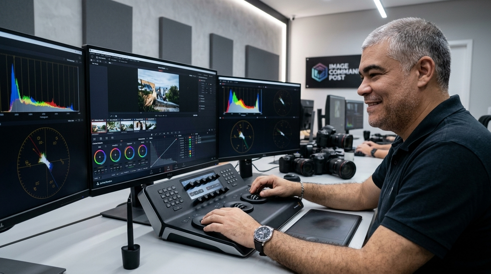

Rio de Janeiro · Atendimento em qualquer lugar
Cada corte
carrega uma
intenção
Sou um editor de vídeos apaixonado por dar vida a ideias e criar conteúdos que marcam. De projetos institucionais a produções criativas, cada detalhe da edição é pensado para conectar sua mensagem ao público certo.
- 30+ anos de edição de imagens
- TV Manchete onde a jornada começou
- Rede Globo jornalismo, entretenimento, documentários
- Copas e Olimpíadas cobertura in loco
01 Apresentação
Sérgio Goulart
Trabalho há mais de 30 anos com edição de imagens. Iniciei minha jornada na extinta TV Manchete e, logo depois, na Rede Globo de Televisão, atuando nos mais diversos segmentos: jornalismo, entretenimento, documentários.
Tive atuação marcante na cobertura de eventos internacionais como várias Copas do Mundo de futebol e Olimpíadas — todas realizadas com trabalho in loco, edição e envio de material em tempo hábil para ser veiculado nos diversos programas da emissora.
Possuímos experiência e material de última geração para imagens realizadas por drone. Qualidade, experiência e narrativa envolvente em cada frame. Se você busca profissionalismo com a energia de quem ama o que faz, seu vídeo está em boas mãos.

-
01
Produção e edição
Mídias audiovisuais do bruto ao master, com ritmo e narrativa pensados para o público certo.
-
02
Captação de imagens
Câmeras e drones, com material de última geração para planos aéreos e de solo.
-
03
Vídeos institucionais
Peças que traduzem a mensagem da sua marca com sobriedade e acabamento de emissora.
02 Indicação e reconhecimento
O que dizem
sobre o trabalho
Arraste para o lado
03 Cursos
Ensinar
também é ofício
Sérgio Goulart ministra cursos online de edição de imagens, passando adiante a técnica e o repertório acumulados em mais de 30 anos de emissora.
O vídeo ao lado registra esse trabalho de formação e o reconhecimento de colegas de profissão.
Para mais informações sobre os cursos, fale direto com o Sérgio:
04 Portfólio
Trabalhos realizados
Arraste para o lado
05 Contato
Vamos
criar juntos?
Produção e edição de mídias audiovisuais. Captação de imagens com câmeras e drones. Vídeos institucionais. Baseado no Rio de Janeiro, com atendimento em qualquer lugar.